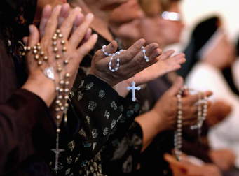

Bangladesh Christians are also found. Christianity arrived in what is now Bangladesh during the late sixteenth to early seventeenth century CE, through the Portuguese traders and missionaries. Christians account for less than 1% of the total population. The total Christian population is around 370,000, out of which 221,000 are Roman Catholics, the rest being Orthodox and non-denominational. They perform many festivals among them the main festival is:
1.Christmas Day
2.Advent Season
3.Easter Sunday
4.Ascension Thursday
5.Pentecost Sunday
